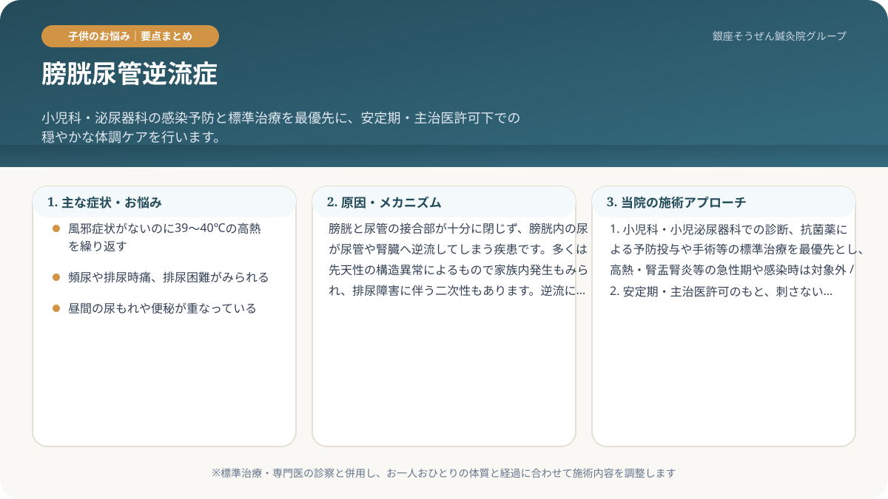

膀胱尿管逆流症の鍼灸
小児科・泌尿器科の感染予防と標準治療を最優先に、安定期・主治医許可下での穏やかな体調ケアを行います。
まず知っておきたい要点と改善の流れ

膀胱と尿管の接合部が十分に閉じず、膀胱内の尿が尿管や腎臓へ逆流してしまう疾患です。多くは先天性の構造異常によるもので家族内発生もみられ、排尿障害に伴う二次性もあります。逆流により細菌が腎臓へ達して急性腎盂腎炎を繰り返すと、腎臓の傷（腎瘢痕）や将来の腎機能低下・高血圧につながるため、抗菌薬による感染予防や必要に応じた手術（新吻合術・デフラックス注入術）などの医療管理が重要です。
このようなお悩みはありませんか？
- ✓風邪症状がないのに39〜40℃の高熱を繰り返す
- ✓頻尿や排尿時痛、排尿困難がみられる
- ✓昼間の尿もれや便秘が重なっている
- ✓膀胱尿管逆流症の経過観察や抗菌薬予防を続けている
当院の施術アプローチ・改善の流れ
なぜ鍼灸で改善へ向かうのか？（作用機序の図解）
膀胱尿管逆流症に対する鍼灸は、「刺さない小児はり」による皮膚感覚〜自律神経の鎮静機序を通じて、お体本来の回復力を引き出します。

刺さない専用の「小児はり（てい鍼）」で、背中や手足の皮膚をリズミカルに優しく撫でます。
皮膚への穏やかな触覚刺激が脳へ伝わり、安心ホルモン（オキシトシン等）と副交感神経を促します。
興奮しやすい子どもの神経バランスを落ち着かせ、夜泣き・おねしょ・起立不調の土台を整えます。
保護者の方と寄り添いながら、お子さまの体調と成長ペースに合わせた無理のないケアを続けます。
院長YouTube解説・関連動画
公開日：２０２１年 ８月２３日
更新日：２０２１年 １０月 ２日
本日は膀胱尿管逆流症について解説させていただきます。
☆本記事の内容
- •膀胱尿管逆流症とは
- •膀胱尿管逆流症の原因
- •膀胱尿管逆流症の症状
- •膀胱尿管逆流症の改善方法
- •膀胱尿管逆流症のまとめ
- •尿管膀胱接合部が閉じず、膀胱内の尿が尿管や腎臓へと逆もどりする
- •膀胱尿管逆流症の多くは、先天性
- •膀胱尿管逆流症の症状は、発熱や頻尿や排尿時痛
- •膀胱尿管逆流症の改善方法は、薬や手術
- •膀胱尿管逆流症の可能性
銀座そうぜん鍼灸院の宗前です。
このページを書いている私は、鍼灸師として１３年、担当した利用者様数８０，０００人を誇り、病気の休職者３００人を社会復帰できるまで回復させてきた実績があります。
膀胱尿管逆流症の症状は、発熱や頻尿や排尿時痛
膀胱尿管逆流症の症状は、発熱、頻尿、排尿時の痛みです。膀胱尿管逆流症の原因が、神経的な病気にある場合は、尿もれが現れたり尿の出にくさを感じたりするという症状が現れることもあります。
膀胱尿管逆流症では、特に症状がないこともあります。
腎臓に尿が逆流することそのものよりも、腎盂腎炎を繰り返すことが問題になります。腎臓に瘢痕ができ、瘢痕ができた部分があまり成長しなくなるためです。そのため、瘢痕が大きい場合、腎臓が小さくなり腎臓の機能が下がることもあります。
さらに、強い程度で逆流している子供の場合は、生まれた時から逆流する側の腎臓が小さいケースもあります。
腎臓が2つとも小さい場合や生まれた時から腎臓を1つしか持っていないという場合は、より注意深く成長を見ていきましょう。
膀胱尿管逆流症の改善方法は、薬や手術です。乳幼児では抗菌薬を使って尿路感染の改善に取り組みます。よく使われる薬は、バクタという薬です。
膀胱尿管逆流症は、年齢を重ねると自然に改善することがあります。特に病気が見つかる年齢が若くて逆流の程度が低く、片方のみの場合は、自然に改善することが多いと言われています。
しかし、繰り返し尿路感染をしたり腎機能が低下したりしている場合は手術を行うこともあります。
膀胱尿管逆流症を改善するための手術には、尿管膀胱新吻合術という逆流を防止する手術や内視鏡を使って尿管口の周りにデフラックスという補強剤を注入する手術などがあります。
赤ちゃんの発熱の原因の5～10％は、尿に細菌が入り込むことで起こる尿路感染であると言われています。
膀胱炎で発熱をすることはありませんが、膀胱尿管逆流症を発症すると、細菌が腎臓まで送られ、急性腎盂腎炎を起こして39～40℃の高熱が出るのです。
風邪のような症状がないのにも関わらず、何度も高熱を出したり、昼間に尿もれが続いたり、排尿の回数が多かったり、排尿の回数が異常に少なかったりする場合、膀胱尿管逆流症の可能性があります。
腎・泌尿器・排尿トラブル・透析サポートのツボ図解
実際の施術ではお一人おひとりの体質・症状に合わせて選穴しますが、過活動膀胱・尿失禁・前立腺症状・CKD/透析QOLの標準治療併用ケアの臨床でよく用いられる代表的なツボの目安です。

📌 代表的なツボの詳細一覧表を開く（6穴） ▼
| ツボ名 | 位置の目安 | 主な狙い | セルフケアの注意点 |
|---|---|---|---|
| 腎兪（じんゆ） | 腰のくびれの高さ、背骨から指2本分外側 | 腎・泌尿器周囲の自律神経と冷え・倦怠感ケア | 腰部を温めることで夜間頻尿の負担も和らぎます。 |
| 次髎（じりょう） | 仙骨の2番目のくぼみ（お尻の上中央付近） | 仙髄排尿神経（S2〜S4）を介した膀胱機能調整の最重要穴 | 腹圧性・切迫性尿失禁や過活動膀胱の国際RCTでも定番です。 |
| 関元（かんげん） | おへそから指4本分下 | 下腹部の冷え改善・骨盤内の循環サポート | 排尿を済ませた状態で優しく温めます。 |
| 中極（ちゅうきょく） | 恥骨のすぐ上、おへそから指5本分下 | 膀胱の過敏性・残尿感・頻尿の調整 | 強く押し込まず軽く手を当てる・温める程度にします。 |
| 三陰交（さんいんこう） | 内くるぶしの上から指4本分上 | 脛骨神経を介した膀胱過活動の鎮静・睡眠の質改善 | 透析中の方はシャント腕を避け非透析日に安全に行います。 |
| 太渓（たいけい） | 内くるぶしとアキレス腱の間 | 腎経の原穴として冷え・むくみ・夜間頻尿の土台づくり | 足首を冷やさない工夫と合わせてケアします。 |
国際査読論文の科学的エビデンス
国際的な医学データベース（PubMed・Cochrane等）で報告されている過活動膀胱・尿失禁・前立腺症状・CKD/透析QOLの標準治療併用ケア領域の代表的な査読済み鍼灸研究をまとめています（標準治療との併用や研究上の限界を含めて正確に掲載）。
📚 査読論文データ・PubMed出典リンクを開く（4件） ▼
| 年・研究デザイン | 対象・規模 | 主な結果 | 限界・出典 |
|---|---|---|---|
| 2022年 メタ解析 | 小児夜尿症 13試験（n=890） | 非侵襲レーザー鍼（p=0.001）・灸（p=0.004）で改善児が有意増加。デスモプレシンとは完全治癒率差なし（p=0.57）。 | GRADE確実性は非常に低い。標準治療の補完ケア。 Explore (PMID: 34893441) |
| 2025年 メタ解析 | 小児喘息 16 RCTs（n=1,675・標準治療併用） | 鍼灸併用でFEV1pred%（MD 6.02, p=0.0128）・PEF（p=0.0019）が改善、IgE・IL-4・好酸球も有意低下。 | QOL（PAQLQ）は有意差なし、バイアス懸念あり。吸入薬継続必須。 Front Med (PMID: 40740962) |
| 2024年 メタ解析（TSA付） | 小児アレルギー性鼻炎 13 RCTs（n=1,186） | 鍼＋薬物併用は薬物単独より有効性優位（RR 1.29, p<0.00001）、再発率も低下（RR 0.40）。 | 鍼単独は薬物と差なし（p=0.13）。全体的な質は低い。 Int Forum Allergy Rhinol (PMID: 39017391) |
| 2016年 メタ解析 | 小児扁桃摘出術後嘔吐（PONV）8研究 | 内関（PC6）鍼刺激群で術後の悪心・嘔吐発生が有意に減少（RR 0.77, p<0.05）。 | 観察研究含む。急性嘔吐・脱水時は小児科受診最優先。 Laryngoscope (PMID: 26864736) |
参考文献・出典
- 2022年 メタ解析（小児夜尿症 13試験（n=890））— Explore (PMID: 34893441)
- 2025年 メタ解析（小児喘息 16 RCTs（n=1,675・標準治療併用））— Front Med (PMID: 40740962)
- 2024年 メタ解析（TSA付）（小児アレルギー性鼻炎 13 RCTs（n=1,186））— Int Forum Allergy Rhinol (PMID: 39017391)
- 2016年 メタ解析（小児扁桃摘出術後嘔吐（PONV）8研究）— Laryngoscope (PMID: 26864736)
よくある質問（FAQ）
Q. 熱が出ている時に施術を受けられますか？▼
Q. 成長とともに自然に治ることはありますか？▼
あわせて読まれる関連疾患（子供のお悩み）
専門医の抗てんかん薬・睡眠管理と療育を最優先とし、安定期・主治医許可下の穏やかな補完ケアと保護者支援を行います。
専門医による手術と長期管理を最優先とし、安定期・主治医許可下での穏やかなリラクゼーションと保護者支援を行います。
指定難病の専門医療と多職種療育を最優先とし、安定期の主治医許可下で穏やかな補完ケアと保護者支援を行います。
耳鼻咽喉科の早期診断と療育を最優先に、安定期・主治医許可下の穏やかな全身ケアで親子の負担を支えます。
小児専門医の標準治療を最優先とし、安定期の主治医許可下での穏やかな補完ケアと保護者様への支援を行います。
発達期に知的機能と適応機能の困難が生じる知的障害。多職種チーム支援を最優先し、穏やかに体調を支えます。
CLINICAL RECOVERY CASES
✨ 実際の臨床改善事例・回復経過を見る
銀座本院をはじめ各院での実際の改善事例を症状別に絞り込んでご確認いただけます。
おひとりで悩まず、まずはご相談ください
銀座本院・川口・大宮・横浜・博多・田無の各院でご予約を承っております。